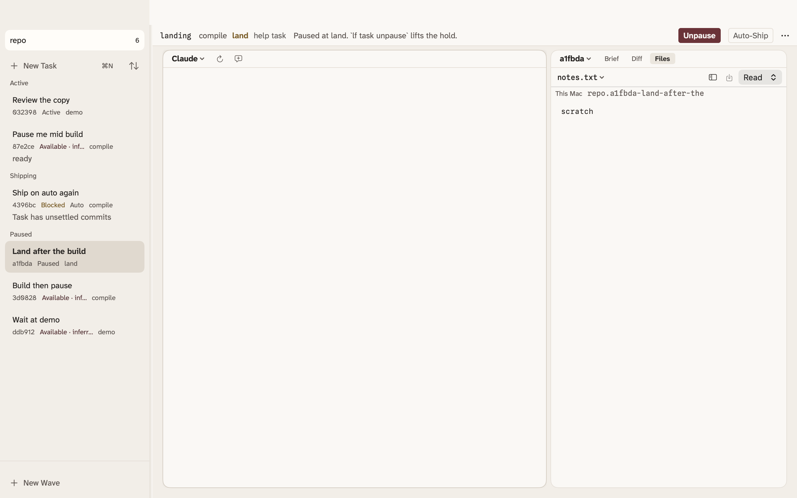

This run used the branch lf at 85eebde63c on the private Machine from the earlier walkthroughs (LF_HOME=/tmp/lfqp2/home), with its five Tasks as returning data. A new Task, a1fbda, ran the repository Graph landing (- compile, - cmd: land, - cmd: help task). Its compile step was a real Claude worker running a cargo build, and the crate's build.rs sleeps for 240 s. The run covered the three commits since the previous QA: paused conditions, Active while a manual landing is ahead, and reading Working groups in one pass.
| Scenario | What happened |
|---|---|
| Returning Machine, server on the new binary | The list showed Shipping (4396bc), Paused (3d0828, ddb912) and Active (032398, 87e2ce), the same as the previous run. |
| Running with land ahead, auto unset | The Task read Shipping. This is correct: when auto is unset, the run merges at land. |
| Same run: auto off, on, off | It read Active, then Shipping, then Active. The single build-script-build process (PID 22718) kept running throughout. |
Pause the running build with uncommitted notes.txt | The pause returned in 1.1 s. build-script-build was gone, and the primary claude --name a1fbda stayed. Its condition was clear with “Task is paused; run `lf task unpause a1fbda` to lift the hold”, dirty: true was kept, and the action was no_action. |
| Pause and unpause 4396bc (Blocked · unsettled commits) | While paused, its condition was clear. After unpause it was back to blocked “Task has unsettled commits” under Shipping. |
| Unpause a1fbda | The Task was Active, blocked “Task has uncommitted work”, and status read “Stopped at compile. `lf task run` starts it again.” |
| Run to the landing stop with auto off | After the build it read “Waiting at land: auto is off (QA Person). `lf task auto on a1fbda` lands it.” and stayed Active. |
| Pause at the landing stop | The Task moved to Paused and auto on was refused. Status also said latest Graph: Graph landing finished; nothing further is launched beside “Paused at land.” Fixed: it now reads “Waiting at land while the Task is paused”. Unpause restores the auto-off sentence. |
| Mac sidebar (isolated Dev bundle at HEAD, screen locked, live snapshot) | The sidebar showed Active (2), Shipping (4396bc Blocked · Auto) and Paused (a1fbda, 3d0828, ddb912). The paused dirty a1fbda read “Paused”, not Blocked. The bar read “Paused at land. `lf task unpause` lifts the hold.” with Unpause, and the Claude pane was mounted. |

TaskGraph::waiting_to_land is now landing_stop, which returns the step and the off mark. The Task snapshot shows either the auto-off sentence or, while paused, “Waiting at <step> while the Task is paused”. auto_off_sticks_through_a_headless_relaunch asserts the paused sentence..lf/qa/task-pause.md now explains how to set up a landing stop, and why an unset auto reads Shipping.land with auto off and was not turned on.demo, status says “No Task Graph has run; independent Sessions may still be active”, even though a run took them there. This was already the case before this change.Error: invalid data:. This is older behavior.